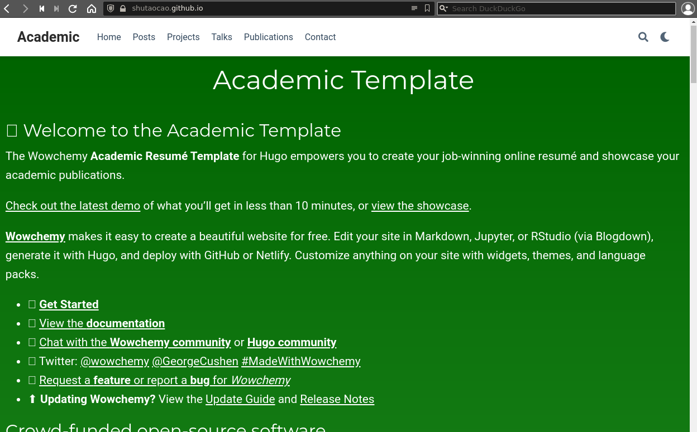

Creating Personal GitHub Page
A Layman’s Notes to Create Personal GitHub Page with Academic Template for Hugo.
This note puts together things I did to create my personal GitHub page using the template `starter-academic' for Hugo. It seems that there may be more efficient ways than what I did below.
I first cloned the template to my local computer, then deployed the web page to GitHub. I customized my GitHub page after the deployment was complete. Everything is done on my laptop with the Fedora 33 Linux system.
1. Preparation
On local computer
I created a folder myAcademicSite to hold all source files. I also installed Go and Hugo-extended.
In terminal:
sudo dnf install golang
Note, I did not install Go by snap as suggested here.
Next, I downloaded the hugo-extended from https://github.com/gohugoio/hugo/releases. After uncompressing the .gz file, I moved the binary hugo to the folder myAcademicSite.
On GitHub
I already have my personal GitHub page, using a default theme of GitHub pages. I backed up the content of this existing page.
I logged in to my account on GitHub, then forked starter-academic. The fork icon is on the top right corner of the page.
In my GitHub account, I renamed the forked starter-academic to myAcademicSite.
2. Create my web page on local computer
Below I mostly referenced https://wowchemy.com/docs/guide/deployment/.
In terminal:
git clone https://github.com/shutaocao/myAcademicSite.git myAcademicSite
cd myAcademicSite
git submodule update --init --recursive
This clones the starter-academic theme template to my local computer. Remove public/ folder if there is one:
rm -r public/
Still in the folder myAcdemicSite, in the file config/_default/config.yaml, set
baseurl = "https://shutaocao.github.io/"
In terminal:
hugo server
Copy the http address http://localhost:1313/ and paste it in browser. This will start the starter-acadmic original website on my local computer.
Hit keyboard Ctrl+c to stop hugo server.
3. Deploy the newly created web page to GitHub
In terminal, if not already in the folder myAcadmicSite, do:
cd myAcademicSite
In terminal:
git submodule add -f -b master https://github.com/shutaocao/shutaocao.github.io.git public
git add .
git commit -m "Initial commit"
git push -u origin master
This has done two things:
-
It created a folder public/ that has all necessary files and folders for my personal GitHub page.
-
It deployed the original starter-academic template in public/ to GitHub.
Next, regenerate my website’s HTML code by running hugo and pushing the public submodule to GitHub, in terminal:
hugo
cd public
git add .
git commit -m "Build website"
git push origin master
cd ..
This now has deployed the original starter-academic content as my website to GitHub.
In browser, my web page shutaocao.github.io looks like this

Now, I have successfully cloned the original starter-academic page to be my personal GitHub page.
Next, I need to customize my personal GitHub page.
4. Customize my personal GitHub page
All changes to my personal GitHub page are done in the folder myAcademicSite on my local computer. When it is ready, I pushed the customization to GitHub by repeating the following:
hugo
cd public
git add .
git commit -m "Build website"
git push origin master
cd ..
Executing hugo builds the website from source files.
It is a little tedious for me as a newbie to customize my personal web page. The first thing should have been to understand the template structure in the folder myAcademicSite, instead I did other things which is not efficient.
In customizing the content of my personal website, I referenced the wowchemy website.
https://wowchemy.com/docs/getting-started/get-started/
5. A thank you note
Thanks to George Cushen for making the template open source.